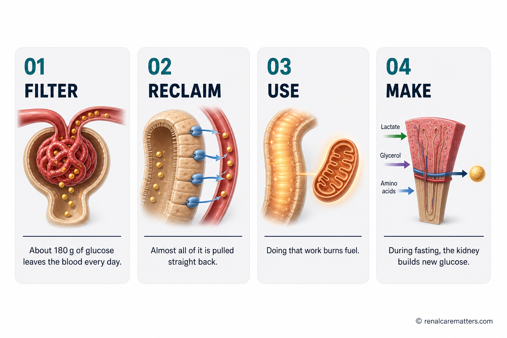
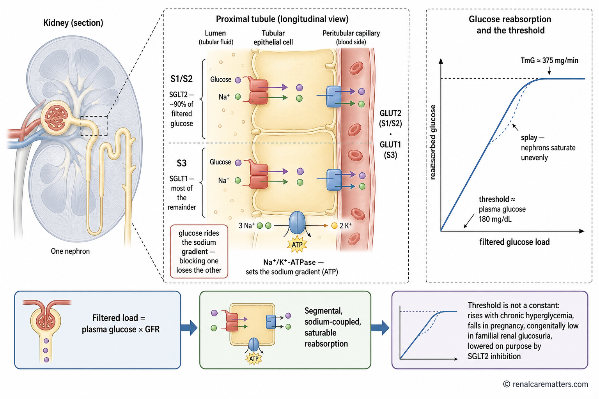
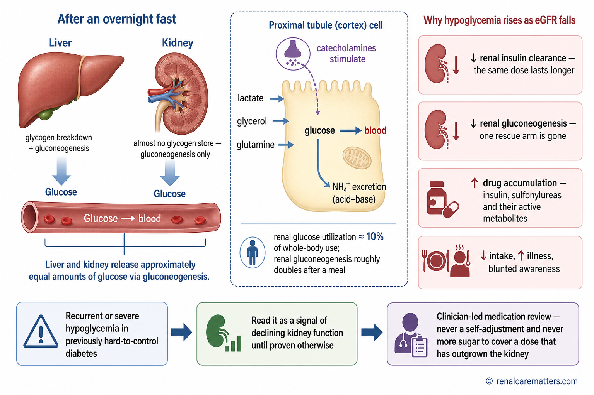
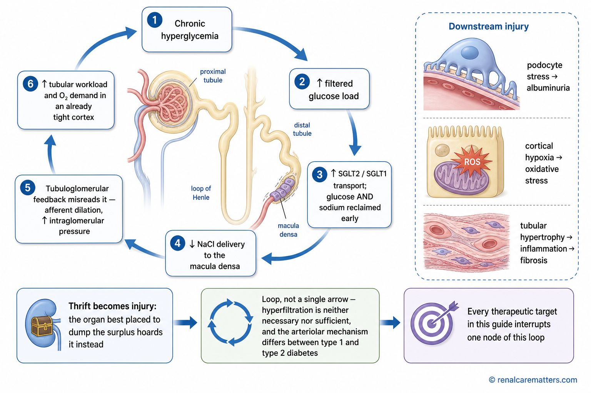
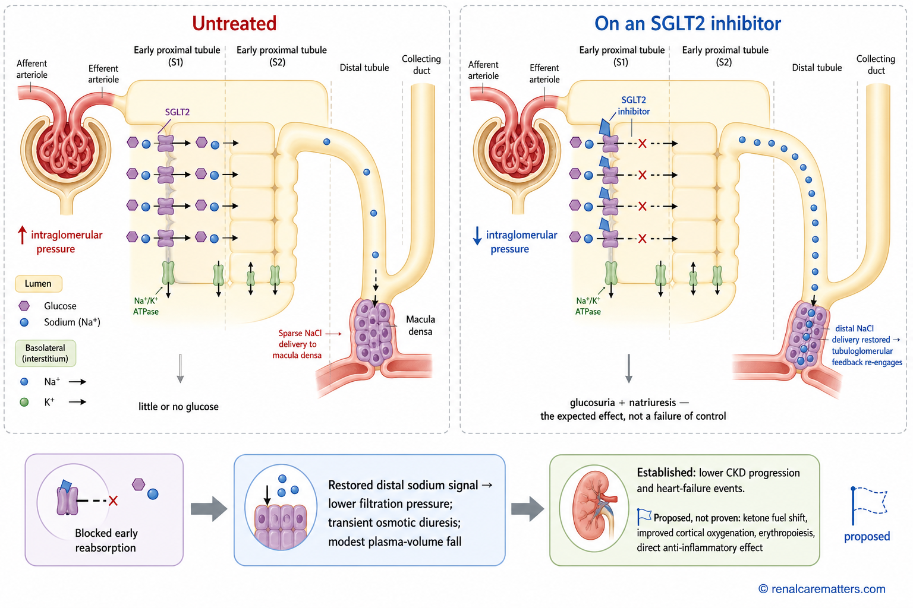
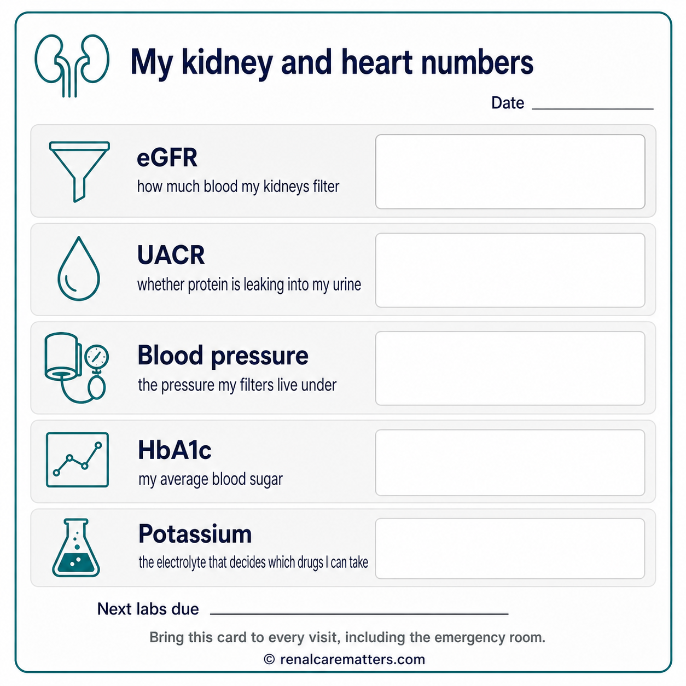
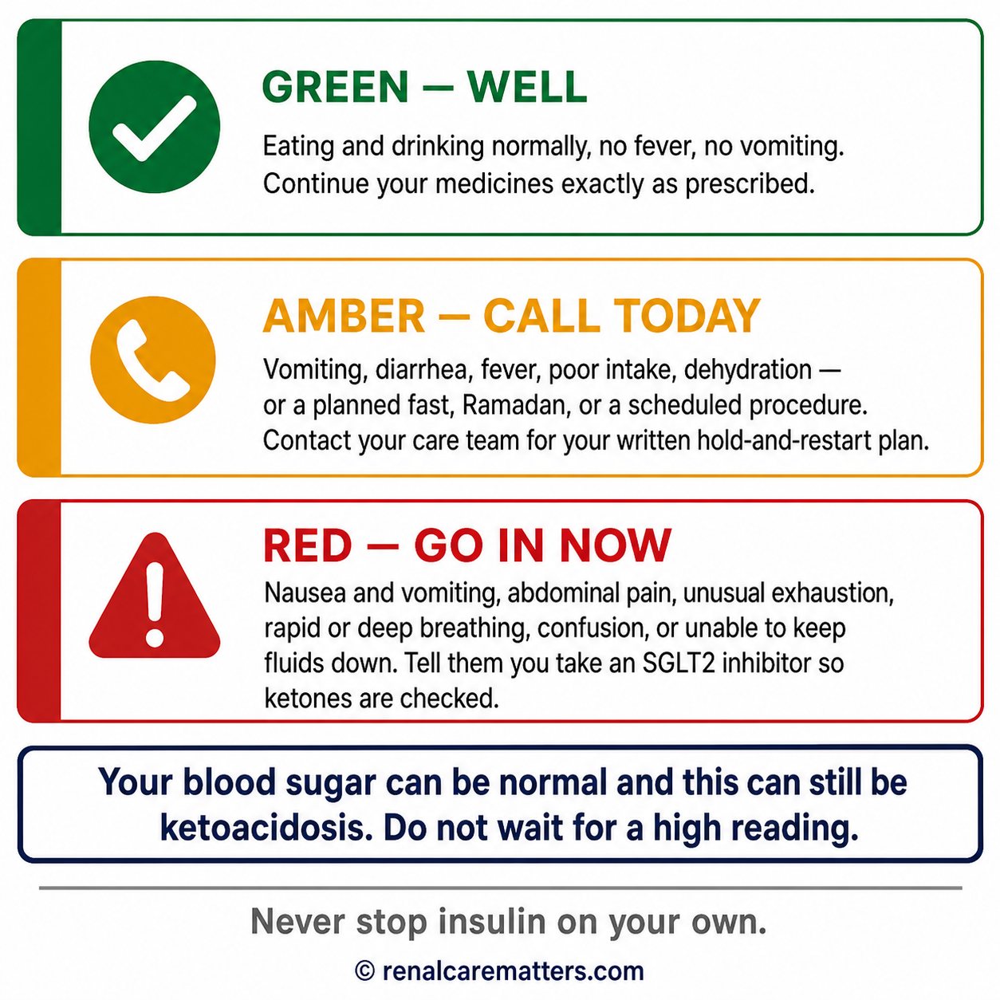
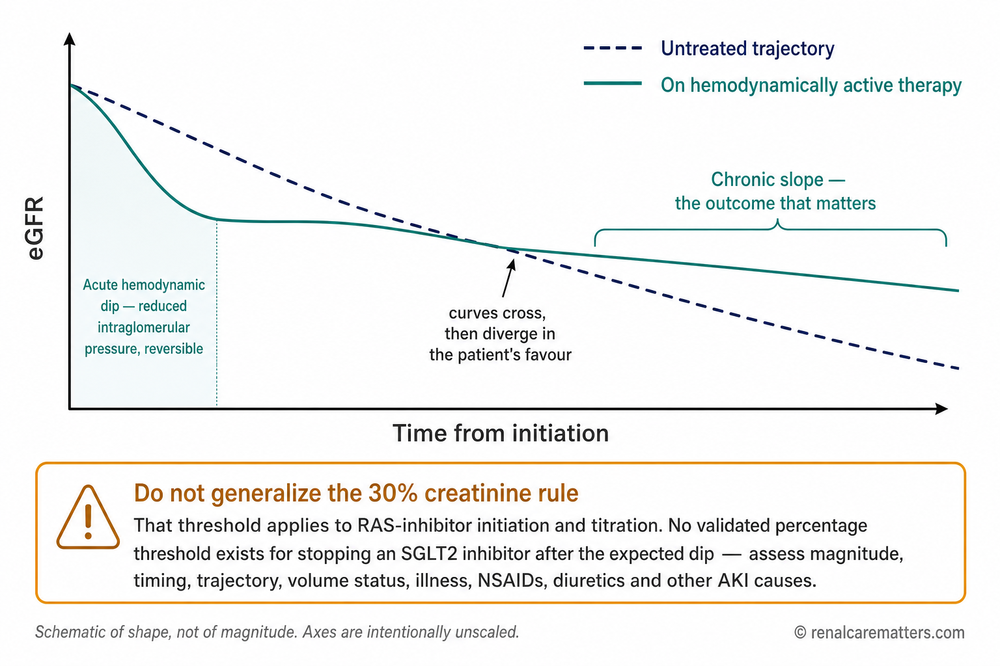
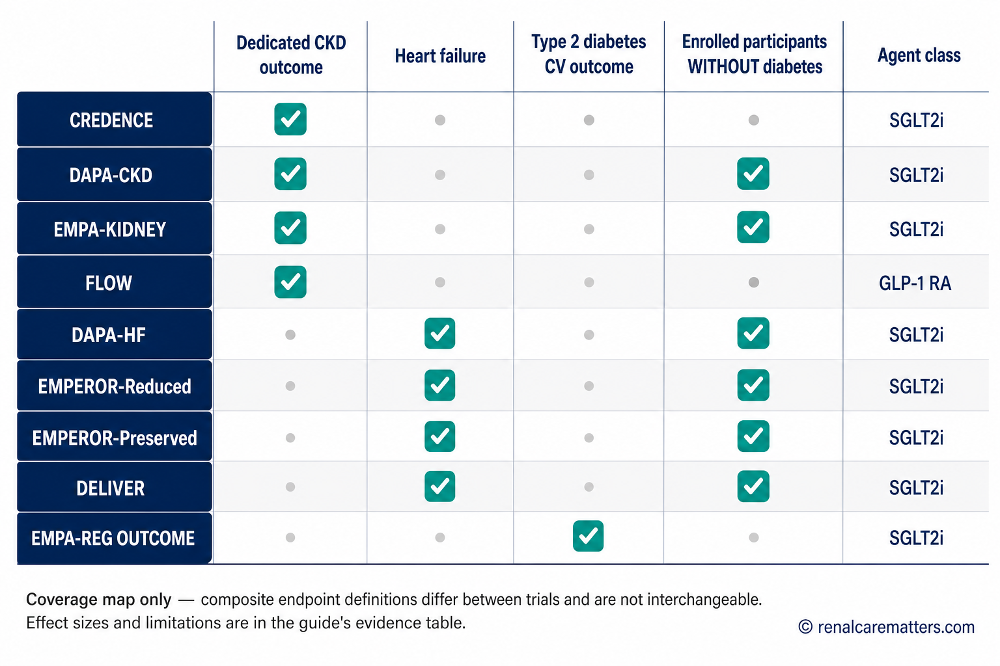
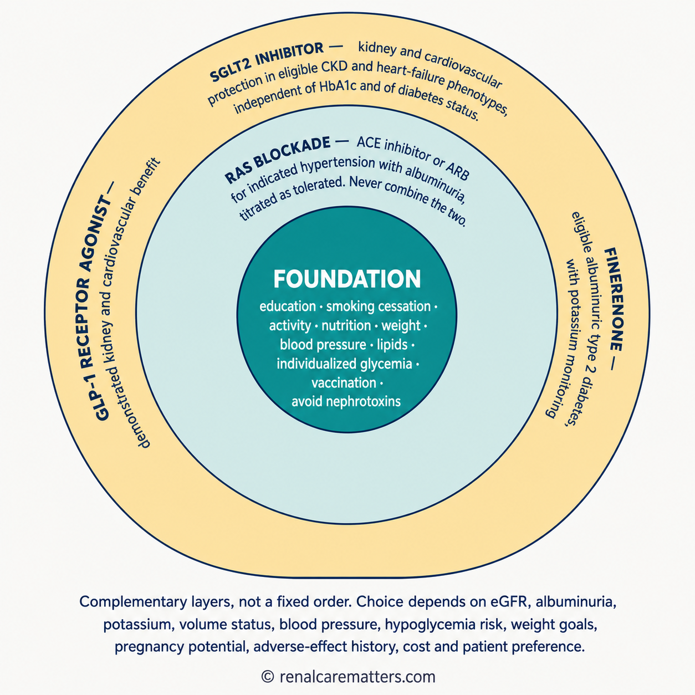

Four things your kidneys do with sugarApat na bagay na ginagawa ng inyong bato sa asukalUpat ka butang nga gibuhat sa imong kidney sa asukalApat a bage a daptan ding kekang batu king asukal
A Filipino adult living with type 2 diabetes reviewing kidney laboratory results with a nephrologist. Most people learn about the kidney as a filter; this guide is about the three other jobs it quietly does with sugar every hour of the day.
Almost everyone has been taught that the kidney is a filter. That is true, but it is barely a quarter of the story. Think of the kidney less like a coffee filter and more like a recycling plant with its own power station and a small bakery attached. It filters your blood, it takes back nearly everything valuable that was filtered out, it burns a large amount of fuel doing that work, and — when food runs short — it bakes fresh glucose and sends it into the bloodstream.Halos lahat ay tinuruan na ang bato ay isang salaan. Totoo iyon, ngunit isang-kapat lamang iyon ng buong kuwento. Isipin ang bato hindi bilang salaan ng kape kundi bilang isang planta ng recycling na may sariling planta ng kuryente at maliit na panaderya. Sinasala nito ang inyong dugo, ibinabalik ang halos lahat ng mahalagang nasala, sumusunog ito ng maraming gasolina sa paggawa niyon, at — kapag kulang ang pagkain — gumagawa ito ng sariwang glucose at ipinapadala sa daloy ng dugo.Halos tanan gitudloan nga ang kidney usa ka salaan. Tinuod kana, apan usa lang kana ka-upat ka bahin sa tibuok istorya. Hunahunaa ang kidney dili ingon salaan sa kape kondili ingon usa ka planta sa recycling nga adunay kaugalingong planta sa kuryente ug gamay nga panaderya. Gisala niini ang imong dugo, gibalik ang halos tanan nga bililhon nga nasala, nagsunog kini og daghang gasolina sa pagbuhat niana, ug — kon kulang ang pagkaon — maghimo kini og bag-ong glucose ug ipadala sa dugo.Halus anggang tau atin lang aral a ing batu metung yang salakan. Tutu ya ita, dapat metung mung kapat ne ning mabilug a salese. Isipan me ing batu e antimong salakan kape nune antimong planta ning recycling a atin sariling planta kuryente at malating panaderya. Sasala ne ing kekang daya, ibalik ne ing halus anggang mahalaga a mesala, manilab yang dakal a gasolina king pamandapat kanita, at — nung kulang ing pamangan — gagawa yang bayung glucose at pipadala ne king agus ning daya.
FilterSalainSalaonSalan
Glucose is a small molecule, so it passes freely from blood into the kidney's filtering units. At an average blood sugar, roughly 180 grams of glucose — about 45 teaspoons — is filtered every single day.Maliit na molekula ang glucose, kaya malayang dumadaan ito mula sa dugo papunta sa mga yunit na sumasala ng bato. Sa karaniwang asukal sa dugo, humigit-kumulang 180 gramo ng glucose — mga 45 kutsarita — ang nasasala araw-araw.Gamay nga molekula ang glucose, mao nga gawasnon kining moagi gikan sa dugo ngadto sa mga yunit nga nagsala sa kidney. Sa kasagarang asukal sa dugo, mga 180 ka gramo nga glucose — mga 45 ka kutsarita — ang masala matag adlaw.Malating molekula ya ing glucose, kaya malaya yang dumalan manibat king daya papunta kareng yunit a sasala ning batu. King karaniwan a asukal king daya, mag 180 gramu a glucose — mag 45 kutsarita — ing masala kada aldo.
ReclaimBawiinBawionBawian
Losing 180 grams of sugar a day would be a disaster, so healthy kidney tubules pull almost all of it back into the blood. Two protein pumps do this: sodium–glucose cotransporter 2 (SGLT2) takes back roughly nine-tenths of it, and sodium–glucose cotransporter 1 (SGLT1) downstream catches most of the rest.Sakuna kung mawawalan kayo ng 180 gramo ng asukal araw-araw, kaya halos lahat nito ay hinihila pabalik sa dugo ng malulusog na tubule ng bato. Dalawang protina ang gumagawa nito: ang sodium–glucose cotransporter 2 (SGLT2) ang bumabawi ng halos siyam na bahagi sa sampu, at ang sodium–glucose cotransporter 1 (SGLT1) sa dulo ang sumasalo sa halos natitira.Katalagman kon mawad-an ka og 180 ka gramo nga asukal matag adlaw, mao nga halos tanan niini gibira balik sa dugo sa himsog nga tubule sa kidney. Duha ka protina ang naghimo niini: ang sodium–glucose cotransporter 2 (SGLT2) mobawi og halos siyam ka bahin sa napulo, ug ang sodium–glucose cotransporter 1 (SGLT1) sa unahan mosalo sa halos nahibilin.Kasakunan nung mawala kekayu ing 180 gramu asukal kada aldo, kaya halus anggang ini ing bibatak lang pabalik king daya ding mayap a tubule ning batu. Adwang protina ing gagawa kanini: ing sodium–glucose cotransporter 2 (SGLT2) ing mibawi king halus siyam a dake king apulu, at ing sodium–glucose cotransporter 1 (SGLT1) king tauli ing sasalu king halus mitagan.
UseGamitinGamitonGamitan
Pumping all that sugar and salt back uphill costs energy. Kidney tissue is one of the most oxygen-hungry tissues in the body, and after an overnight fast it burns roughly one-tenth of all the glucose the body uses.Kailangan ng enerhiya upang ibalik pataas ang lahat ng asukal at asin na iyon. Isa ang tisyu ng bato sa pinakagutom sa oksiheno sa katawan, at pagkatapos ng magdamag na pag-aayuno ay sinusunog nito ang halos isang-kapulo ng lahat ng glucose na ginagamit ng katawan.Nagkinahanglan og kusog ang pagbomba balik sa tanan nga asukal ug asin. Ang tisyu sa kidney usa sa labing gigutom sa oksiheno sa lawas, ug human sa tibuok gabii nga pagpuasa mosunog kini og halos usa ka bahin sa napulo sa tanan nga glucose nga gigamit sa lawas.Kailangan neng enerhiya ing pamibalik pataas king anggang asukal at asin. Metung ing tisyu ning batu kareng pekamagutum king oksiheno king katawan, at kaibat ning kabengi a pamagayunu ing manilab yang halus metung a kapulu ning anggang glucose a gagamitan ning katawan.
MakeGumawaMaghimoGumawa
The liver is not the body's only sugar factory. During fasting the kidney builds new glucose from lactate, glycerol and amino acids, and in the fasting state its output rivals the liver's own manufactured glucose.Hindi lang atay ang pabrika ng asukal ng katawan. Habang nag-aayuno, gumagawa ang bato ng bagong glucose mula sa lactate, glycerol at amino acid, at sa ganitong kalagayan ay kasinglaki ng atay ang nagagawa nitong glucose.Dili lang atay ang pabrika sa asukal sa lawas. Sa panahon sa pagpuasa maghimo ang kidney og bag-ong glucose gikan sa lactate, glycerol ug amino acid, ug sa maong kahimtang katumbas sa atay ang gihimo niini nga glucose.E mu ing ate ing pabrika asukal ning katawan. Kabang mag-ayunu, gagawa ing batu bayung glucose manibat king lactate, glycerol at amino acid, at king kabilyan a ini ing kayanti ne ning ate ing gagawan nang glucose.

A four-panel strip showing the kidney's glucose jobs in order: sugar is filtered out of the blood, reclaimed by transporter pumps in the tubule, burned as fuel by the kidney's own tissue, and manufactured from scratch during fasting. The doorway it leaves by on the blood side of the cell is a glucose transporter (GLUT).
- SGLT2
- Sodium–glucose cotransporter 2, the high-capacity glucose pump of the early proximal tubule
- SGLT1
- Sodium–glucose cotransporter 1, the lower-capacity backup pump further downstream
- GLUT
- Glucose transporter — the doorway on the blood side of the tubule cell that lets reclaimed glucose back into the circulation
Why any of this matters to you: for a century these four jobs were a physiology-exam curiosity. Then someone asked a practical question — what happens if we deliberately switch off the reclaiming pump? The answer turned out to protect kidneys and hearts far more than anyone expected, and it changed how kidney disease is treated. The rest of this guide explains why.Bakit mahalaga ito sa inyo: sa loob ng isang siglo, pang-eksamen lamang sa pisyolohiya ang apat na gawaing ito. Pagkatapos ay may nagtanong ng praktikal — ano kaya kung sadyang patayin natin ang bombang bumabawi ng asukal? Lumabas na mas malaki ang naging proteksyon nito sa bato at puso kaysa sa inaasahan ninuman, at binago nito ang paggamot sa sakit sa bato. Ipapaliwanag ng natitirang bahagi ng gabay kung bakit.Nganong importante kini kanimo: sulod sa usa ka siglo, pang-eksamen lang sa pisyolohiya kining upat ka buluhaton. Unya adunay nangutana og praktikal — unsa kaha kon tuyoon nato og patay ang bomba nga mobawi sa asukal? Nagpagawas kini og mas dakong panalipod sa kidney ug kasingkasing kay sa gipaabot ni bisan kinsa, ug giusab niini ang pagtambal sa sakit sa kidney. Ipasabot sa nahibiling bahin sa giya kon nganong.Bakit mahalaga ya ini kekayu: king lub ning metung a siglo, pang-eksamen mu king pisyolohiya ding apat a dapat a deni. Kaibat atin metung a kinutang praktikal — nanu kaya nung sadyang pate tamu ing bombang mibawi king asukal? Linual a mas maragul ing meging proteksyon na king batu at pusu kesa king inasahan ninuman, at binayu ne ing pamanagamut king sakit king batu. Ipaliwanag ne ning mitagang dake ning giya nung bakit.
Why sugar usually stays out of your urine — and when it doesn'tBakit karaniwang walang asukal sa inyong ihi — at kailan mayroonNganong kasagaran walay asukal sa imong ihi — ug kanus-a naaBakit karaniwan alang asukal king kekang mimi — at kapilan atin
The reclaiming pumps are fast, but they are not infinite. Picture a conveyor belt that can carry a fixed number of boxes per minute. Send fewer boxes than its capacity and every single one gets carried; send more and the extras fall off the end. In the kidney, the boxes are glucose molecules and the end of the belt is the urine.Mabilis ang mga bombang bumabawi, ngunit may hangganan sila. Isipin ang isang conveyor belt na kayang magdala ng takdang bilang ng kahon kada minuto. Kung mas kaunti sa kaya nito ang ipadala, madadala lahat; kung sobra, mahuhulog ang labis sa dulo. Sa bato, ang mga kahon ay mga molekula ng glucose at ang dulo ng belt ay ang ihi.Paspas ang mga bomba nga nagbawi, apan adunay kinutoban. Hunahunaa ang usa ka conveyor belt nga makadala og pihong gidaghanon sa kahon matag minuto. Kon mas gamay sa iyang kapasidad ang ipadala, madala tanan; kon sobra, mahulog ang sobra sa tumoy. Sa kidney, ang mga kahon mao ang mga molekula sa glucose ug ang tumoy sa belt mao ang ihi.Masikan la ding bombang mibawi, dapat atin lang angganan. Isipan me ing metung a conveyor belt a kayang magdala takdang bilang kahon kada minutu. Nung mas kaunti king kaya na ing ipadala, madala la anggang; nung sobra, matud la ding sobra king tauli. King batu, ding kahon ila ding molekula ning glucose at ing tauli ning belt iya ing mimi.
In most healthy adults the belt keeps up until blood sugar climbs to roughly 180 mg/dL. Above that, glucose starts appearing in the urine. That single number explains three familiar things at once: why very high blood sugar makes you urinate constantly and feel desperately thirsty, why urine strips are a crude test rather than a diagnosis, and why the same test can be positive in someone with perfectly normal blood sugar who happens to be pregnant, has an inherited difference in the pump, or is taking a medicine that lowers the threshold deliberately.Sa karamihan ng malulusog na nasa hustong gulang, nakakahabol ang belt hanggang umakyat ang asukal sa dugo sa humigit-kumulang 180 mg/dL. Lampas doon, nagsisimula nang lumabas ang glucose sa ihi. Ipinapaliwanag ng isang numerong iyan ang tatlong pamilyar na bagay: kung bakit palaging umiihi at sobrang nauuhaw ang taong napakataas ng asukal, kung bakit magaspang na pagsusuri lamang at hindi diyagnosis ang urine strip, at kung bakit maaaring positibo ang parehong pagsusuri sa taong normal ang asukal ngunit buntis, may minanang pagkakaiba sa bomba, o umiinom ng gamot na sadyang nagpapababa ng hangganan.Sa kadaghanan sa himsog nga hamtong, makasunod ang belt hangtod mosaka ang asukal sa dugo ngadto sa mga 180 mg/dL. Labaw niana, magsugod na og gawas ang glucose sa ihi. Gipasabot niini nga numero ang tulo ka pamilyar nga butang: nganong kanunay mangihi ug grabe kauhaw ang tawo nga taas kaayo ang asukal, nganong lisod-saligan nga pagsusi lang ug dili diagnosis ang urine strip, ug nganong mahimong positibo ang samang pagsusi sa tawo nga normal ang asukal apan mabdos, adunay napanunod nga kalainan sa bomba, o naga-inom og tambal nga tinuyo nga nagpaubos sa utlanan.King dakal a mayap a matua, makatuki ya ing belt angga king munta ing asukal king daya king mag 180 mg/dL. Labas kanita, mangumpisa nang lumual ing glucose king mimi. Ipapaliwanag ning metung a numerung ita ing atlung pamilyar a bage: bakit pane yang mimimi at masyadung mauya ing taung matas ya ing asukal, bakit magaspang a pamagsuri mu at e diyagnosis ing urine strip, at bakit malyaring positibu ing parehung pamagsuri king taung normal ya ing asukal dapat mabuktut, atin yang minanang pamiyaliwa king bomba, o mininum yang gamut a sadyang magpababa king angganan.

A side-cut view of one nephron. Glucose is filtered at the glomerulus, then reclaimed along the proximal tubule — about nine-tenths by SGLT2 in the first segment and most of the remainder by SGLT1 further along. Neither pump uses energy directly; both ride on the sodium gradient created by a sodium pump on the far side of the cell — a pump that runs on adenosine triphosphate (ATP) — which is why blocking glucose reabsorption also means losing sodium. Reclaimed glucose leaves the cell through glucose transporter 2 (GLUT2) on the blood side.
- SGLT2
- Sodium–glucose cotransporter 2
- SGLT1
- Sodium–glucose cotransporter 1
- GLUT2
- Glucose transporter 2 (GLUT2), the exit door into the blood
- ATP
- Adenosine triphosphate, the cell's energy currency
Sugar in the urine is not the same as diabetesAng asukal sa ihi ay hindi katumbas ng diabetesAng asukal sa ihi dili managsama sa diabetesIng asukal king mimi e ya kayanti ning diabetes
A urine test that shows sugar does not prove diabetes, and a urine test with no sugar does not rule it out — especially in chronic kidney disease (CKD), where less blood is filtered so less glucose ever reaches the threshold. Diabetes is diagnosed from blood, not from urine. If you are taking an SGLT2 inhibitor, sugar in the urine is the medicine working exactly as intended and is not a sign that your control has worsened.Ang pagsusuri ng ihi na may asukal ay hindi patunay ng diabetes, at ang walang asukal ay hindi rin nagbubukod nito — lalo na sa chronic kidney disease (CKD) o talamak na sakit sa bato, kung saan mas kaunting dugo ang nasasala kaya mas kaunting glucose ang umaabot sa hangganan. Ang diabetes ay natutukoy mula sa dugo, hindi sa ihi. Kung umiinom kayo ng SGLT2 inhibitor, ang asukal sa ihi ay senyales na gumagana ang gamot ayon sa layunin at hindi tanda na lumala ang inyong kontrol.Ang pagsusi sa ihi nga adunay asukal dili pamatuod sa diabetes, ug ang walay asukal dili usab makaeksklusa niini — ilabina sa chronic kidney disease (CKD) o dugay nang sakit sa kidney, diin mas gamay nga dugo ang masala mao nga mas gamay nga glucose ang moabot sa utlanan. Ang diabetes matino gikan sa dugo, dili sa ihi. Kon naga-inom ka og SGLT2 inhibitor, ang asukal sa ihi timailhan nga naglihok ang tambal sumala sa katuyoan ug dili timaan nga misamot ang imong kontrol.Ing pamagsuri king mimi a atin asukal e ya patune ning diabetes, at ing alang asukal e na mu rin ibubukud ini — lalu na king chronic kidney disease (CKD) o malwat nang sakit king batu, nung nu mas kaunti ing dayang masala kaya mas kaunti ing glucose a miras king angganan. Ing diabetes atatalastas ya manibat king daya, e king mimi. Nung mininum kayu SGLT2 inhibitor, ing asukal king mimi senyas yang gagana ing gamut agpang king layunin at e ya tanda a linala ing kekang kontrol.
Your kidneys also make sugar — and that is why failing kidneys change your medicinesGumagawa rin ng asukal ang inyong bato — at iyan ang dahilan kung bakit binabago ng humihinang bato ang inyong gamotMaghimo usab og asukal ang imong kidney — ug mao kana ang hinungdan nga giusab sa naluya nga kidney ang imong tambalGagawa la mu rin asukal ding kekang batu — at ita ing sangkan bakit bibayuan ning maluyang batu ing kekang gamut
Between meals and overnight, your blood sugar has to be held steady even though nothing is coming in. Two organs do the holding. The liver does it partly by breaking down stored glycogen and partly by building glucose from scratch. The kidney has no meaningful glycogen store, so everything it contributes it must build — from lactate, glycerol and the amino acid glutamine. In the post-absorptive state, the amount of glucose the kidney builds is roughly equal to the amount the liver builds, and after a meal renal glucose production roughly doubles.Sa pagitan ng mga pagkain at sa magdamag, kailangang manatiling matatag ang asukal sa inyong dugo kahit walang pumapasok. Dalawang organ ang gumagawa nito. Ang atay ay bahagyang naglalabas ng nakaimbak na glycogen at bahagyang gumagawa ng glucose mula sa simula. Ang bato ay walang malaking imbak na glycogen, kaya lahat ng iniaambag nito ay kailangan nitong gawin — mula sa lactate, glycerol at sa amino acid na glutamine. Sa kalagayang walang kinakain, halos katumbas ng ginagawa ng atay ang ginagawa ng bato, at pagkatapos kumain ay halos doble ang nagagawang glucose ng bato.Tali sa mga pagkaon ug sa tibuok gabii, kinahanglan magpabiling lig-on ang asukal sa imong dugo bisan walay mosulod. Duha ka organ ang naghimo niini. Ang atay bahin niini pinaagi sa pagbungkag sa gitipigang glycogen ug bahin pinaagi sa paghimo og glucose gikan sa wala. Ang kidney walay dakong tipiganan sa glycogen, mao nga tanan nga iyang gitampo kinahanglan niyang himoon — gikan sa lactate, glycerol ug sa amino acid nga glutamine. Sa kahimtang nga walay gikaon, halos katumbas sa gihimo sa atay ang gihimo sa kidney, ug human mokaon halos doble ang mahimo niini nga glucose.King pilatan ding pamangan at king kabengi, kailangan manatiling matatag ing asukal king kekang daya maski alang lulub. Adwang organ ing gagawa kanini. Ing ate bahagya yang magbungkag king mekaimbak a glycogen at bahagya yang gagawa glucose manibat king umpisa. Ing batu alang maragul a imbak glycogen, kaya anggang ambag na kailangan nang gawan — manibat king lactate, glycerol at king amino acid a glutamine. King kabilyan a alang kakanan, halus kayanti ne ning ate ing gagawan ning batu, at kaibat mangan halus dublada ing agawa nang glucose ning batu.
This matters enormously once kidney function declines. Failing kidneys clear insulin more slowly, so a dose that was safe last year can start stacking up. At the same time the kidney's ability to manufacture rescue glucose falls. Appetite drops, illness comes more often, and other medicines accumulate. Put those together and you get the single most under-recognized danger in advanced kidney disease: hypoglycemia — blood sugar falling too low — in a person whose diabetes was, until recently, hard to control.Napakahalaga nito kapag humihina na ang paggana ng bato. Mas mabagal alisin ng humihinang bato ang insulin, kaya ang dosis na ligtas noong isang taon ay maaari nang mag-ipon. Kasabay nito, bumababa ang kakayahan ng bato na gumawa ng panligtas na glucose. Bumababa ang gana, mas madalas magkasakit, at naiipon ang ibang gamot. Pagsama-samahin ang mga iyan at makukuha ninyo ang pinakahindi napapansing panganib sa malalang sakit sa bato: ang hypoglycemia — sobrang pagbaba ng asukal sa dugo — sa taong hanggang kamakailan ay mahirap kontrolin ang diabetes.Importante kaayo kini kon mokunhod na ang paglihok sa kidney. Mas hinay kuhaon sa naluya nga kidney ang insulin, mao nga ang dosis nga luwas niadtong miaging tuig mahimong magtigom. Dungan niini, mokunhod ang katakos sa kidney sa paghimo og pangluwas nga glucose. Mokunhod ang gana, mas subsob magsakit, ug matigom ang ubang tambal. Isagol kanang tanan ug makuha nimo ang labing wala mamatikdi nga peligro sa grabeng sakit sa kidney: ang hypoglycemia — sobrang pagkunhod sa asukal sa dugo — sa tawo nga hangtod bag-o pa lisod kontrolon ang diabetes.Masyadu yang mahalaga ini nung maluya ne ing pamagobra ning batu. Mas mayumu nang ilako ning maluyang batu ing insulin, kaya ing dosis a ligtas nitang metung a banua malyari nang mag-ipun. Kayabe nini, mibababa ing kayanan ning batu a gumawa panligtas a glucose. Mibababa ing gana, mas pane magkasakit, at mi-ipun la ding aliwang gamut. Ipisan lang deng anggang ita at akua yu ing pekae mapansing kapanganiban king masakit a sakit king batu: ing hypoglycemia — masyadung pamiyabak ning asukal king daya — king taung angga king kailanan mahirap nang kontrolan ing diabetes.

Liver and kidney both release glucose during fasting; the kidney builds all of its share from lactate, glycerol and glutamine because it stores almost no glycogen. The right-hand panel shows the four ways advanced kidney disease tips this balance toward low blood sugar: slower insulin clearance, less renal glucose production, poorer intake, and accumulation of glucose-lowering drugs.
- CKD
- Chronic kidney disease
- eGFR
- Estimated glomerular filtration rate — the calculated measure of filtering capacity
Repeated low blood sugar is a reason to review medicines, not to eat more sweetsAng paulit-ulit na pagbaba ng asukal ay dahilan upang suriin ang gamot, hindi upang dumami ang matamisAng balik-balik nga pagkunhod sa asukal usa ka hinungdan sa pagsusi sa tambal, dili sa pagdaghan sa tam-isIng paulit-ulit a pamiyabak ning asukal sangkan yang pamagsuri king gamut, e ban dumakal ing matamis
If you have had two or more low blood sugar episodes in a week, or any episode that needed help from another person, that is a medical event. Bring the numbers and the times of day to your doctor. Insulin and the older sulfonylurea tablets are the usual culprits in kidney disease, and the correct answer is a dose or drug change made by your clinician — never a self-adjustment and never simply eating more sugar to cover a dose that has become too strong.Kung nagkaroon kayo ng dalawa o higit pang pagbaba ng asukal sa isang linggo, o kahit isang pagkakataong kailangan ninyo ng tulong ng iba, isa itong medikal na pangyayari. Dalhin sa inyong doktor ang mga numero at ang oras ng araw. Ang insulin at ang mga lumang tabletang sulfonylurea ang karaniwang salarin sa sakit sa bato, at ang tamang sagot ay pagbabago ng dosis o gamot na gagawin ng inyong doktor — hindi kailanman sariling pagbabago at hindi basta pagdami ng kinakaing matamis upang takpan ang dosis na sumobra na.Kon nakasinati ka og duha o labaw pa nga pagkunhod sa asukal sulod sa usa ka semana, o bisan usa ka higayon nga nanginahanglan ka og tabang gikan sa uban, usa kini ka medikal nga panghitabo. Dad-a sa imong doktor ang mga numero ug ang oras sa adlaw. Ang insulin ug ang daan nga tableta nga sulfonylurea maoy kasagarang hinungdan sa sakit sa kidney, ug ang husto nga tubag mao ang pag-usab sa dosis o tambal nga buhaton sa imong doktor — dili gayod kaugalingong pag-usab ug dili lang pagdaghan sa gikaon nga tam-is aron tabonan ang dosis nga sobra na.Nung mika kayung adwa o mas marakal pang pamiyabak ning asukal king metung a dominggu, o maski metung a beses a kailangan yu ing saup ning aliwa, metung yang medikal a pamalyari. Dalan yu king kekang doktor ding numeru at ing oras ning aldo. Ing insulin at ding matuang tableta a sulfonylurea ing karaniwan a sangkan king sakit king batu, at ing tamang pakibat iya ing pamibayu ning dosis o gamut a gawan ning kekang doktor — e kapilan man sariling pamibayu at e mu basta pamagdakal king kakanan a matamis ban takpan ing dosis a sinobra na.
In diabetes, the kidney's recycling instinct becomes the problemSa diabetes, ang likas na pagbawi ng bato ang nagiging problemaSa diabetes, ang kinaiyanhong pagbawi sa kidney maoy nahimong problemaKing diabetes, ing likas a pamibawi ning batu ing magi yang problema
Everything the kidney does with glucose was designed for a world where sugar was scarce and losing any of it was dangerous. Diabetes turns that instinct against you. When blood sugar is chronically high, more glucose is filtered, so the tubule works harder; over time the kidney responds by increasing its capacity to reclaim glucose rather than letting the excess escape. The organ best placed to dump the surplus is instead hoarding it.Ang lahat ng ginagawa ng bato sa glucose ay para sa mundong kakaunti ang asukal at delikado ang mawalan nito. Ibinabaling ng diabetes ang likas na ugaling iyon laban sa inyo. Kapag matagal nang mataas ang asukal sa dugo, mas maraming glucose ang nasasala, kaya mas nagsisikap ang tubule; sa paglipas ng panahon, dinadagdagan ng bato ang kakayahan nitong bumawi ng glucose sa halip na palabasin ang labis. Ang organ na pinakamainam sanang magtapon ng sobra ay siya pang nag-iipon nito.Ang tanan nga gibuhat sa kidney sa glucose gilaraw para sa kalibutan diin gamay ang asukal ug delikado ang mawad-an niini. Gibalit-ad sa diabetes kanang kinaiya batok kanimo. Kon dugay nang taas ang asukal sa dugo, mas daghang glucose ang masala, mao nga mas maghago ang tubule; sa paglabay sa panahon, gidugangan sa kidney ang katakos niini sa pagbawi og glucose imbes nga palabason ang sobra. Ang organ nga labing haom untang molabay sa sobra maoy nagtipig hinuon niini.Ing anggang gagawan ning batu king glucose para ya king yatung kaunti ing asukal at delikadu ing mawala ini. Ibabaling ning diabetes ing likas a ugaling ita laban kekayu. Nung malwat nang matas ing asukal king daya, mas dakal a glucose ing masala, kaya mas magsikap ing tubule; king pamanalabas ning panaun, dadagdagan ning batu ing kayanan nang mibawi glucose imbes na palwalan ing sobra. Ing organ a pekamayap sanang magtapun king sobra iya pa ing mag-ipun kanini.
There is a second, quieter consequence, and it is the one that damages the kidney. Glucose never travels alone: each glucose molecule is dragged back into the blood together with sodium. Reclaiming extra glucose therefore means reclaiming extra salt in the very first part of the tubule, so less salt arrives at a sensor further downstream. That sensor is the kidney's own pressure gauge. When it reads low salt, it concludes that filtration must be inadequate and signals for filtration pressure to rise. The filter is then run at a chronically high pressure — a state called hyperfiltration — while the tubule below it is working harder and consuming more oxygen than its blood supply comfortably allows.May pangalawa at mas tahimik na epekto, at ito ang sumisira sa bato. Hindi kailanman nag-iisang naglalakbay ang glucose: bawat molekula nito ay hinihila pabalik sa dugo kasama ng sodium. Kaya ang pagbawi ng dagdag na glucose ay pagbawi rin ng dagdag na asin sa pinakaunang bahagi ng tubule, kaya mas kaunting asin ang nakakarating sa isang sensor sa dulo. Ang sensor na iyon ang panukat ng presyon ng bato. Kapag mababa ang nababasa nitong asin, iniisip nitong kulang ang pagsala at nagbibigay ito ng senyas na taasan ang presyon ng pagsala. Kaya patuloy na mataas ang presyon ng salaan — tinatawag itong hyperfiltration — habang ang tubule sa ibaba ay mas nagtatrabaho at mas maraming oksiheno ang kailangan kaysa kayang ibigay ng daloy ng dugo.Adunay ikaduha ug mas hilom nga sangputanan, ug kini ang nagdaot sa kidney. Dili gayod mag-inusara ang glucose sa pagbiyahe: ang matag molekula niini gibira balik sa dugo uban sa sodium. Busa ang pagbawi og dugang nga glucose nagpasabot usab og pagbawi og dugang nga asin sa kinaunahang bahin sa tubule, mao nga mas gamay nga asin ang moabot sa usa ka sensor sa unahan. Kanang sensor mao ang taksanan sa presyon sa kidney. Kon ubos ang nabasa niini nga asin, maghunahuna kini nga kulang ang pagsala ug mosenyas nga isaka ang presyon sa pagsala. Busa padayong taas ang presyon sa salaan — gitawag kining hyperfiltration — samtang ang tubule sa ubos mas naghago ug mas daghang oksiheno ang gikinahanglan kay sa mahatag sa dugo.Atin adwa at mas tahimik a epektu, at iti ing magsira king batu. E ya kapilan man mag-isang biabiaye ing glucose: ing balang molekula na bibatak yang pabalik king daya kayabe ning sodium. Kaya ing pamibawi king dagdag a glucose pamibawi ya mu rin king dagdag a asin king pekamumunang dake ning tubule, kaya mas kaunting asin ing miras king metung a sensor king tauli. Ing sensor a ita iya ing panukat ning presyon ning batu. Nung mababa ing babasan nang asin, isipan nang kulang ing pamanala at magbie yang senyas a itas ing presyon ning pamanala. Kaya tuloy-tuloy a matas ing presyon ning salakan — auman yang hyperfiltration — kabang ing tubule king lalam mas magtrabahu ya at mas dakal a oksiheno ing kailangan na kesa king kayang ibie ning agus ning daya.

The maladaptive loop of diabetic kidney disease, read clockwise: high blood sugar raises the filtered glucose load, the early tubule reclaims more glucose and more sodium, less sodium reaches the salt sensor, the sensor calls for higher filtration pressure, and the combination of high pressure and high tubular workload produces oxygen stress, albumin leak measured as the urine albumin-to-creatinine ratio (UACR), and scarring — which raises blood sugar handling demands further. No single arrow in this loop is the whole disease; the loop is.
- SGLT2
- Sodium–glucose cotransporter 2
- UACR
- Urine albumin-to-creatinine ratio — the standard test for albumin leak
- eGFR
- Estimated glomerular filtration rate
An honest caveat about this diagramIsang tapat na paalala tungkol sa diagram na itoUsa ka matinud-anong pahimangno bahin niini nga diagramMetung a tapat a paalala tungkul king diagram a ini
This loop is well supported by human and animal physiology, and it is the reason the drugs in the next section were invented. It is still a simplification. Not every person with diabetes hyperfilters, the pressure changes differ between type 1 and type 2 diabetes, and blood pressure, genetics, obesity and other kidney diseases all sit on top of it. Treating the loop is worthwhile; treating it as the whole explanation is not.Malakas ang suporta ng pisyolohiya ng tao at hayop sa loop na ito, at ito ang dahilan kung bakit naimbento ang mga gamot sa susunod na bahagi. Isa pa rin itong pagpapasimple. Hindi lahat ng may diabetes ay nagha-hyperfiltrate, magkaiba ang pagbabago ng presyon sa type 1 at type 2 diabetes, at nakapatong pa rito ang presyon ng dugo, genetiko, sobrang timbang at ibang sakit sa bato. Sulit ang gamutin ang loop; hindi sulit ang ituring itong buong paliwanag.Kusganon ang suporta sa pisyolohiya sa tawo ug hayop niini nga loop, ug mao kini ang hinungdan nga naimbento ang mga tambal sa sunod nga bahin. Usa gihapon kining pagpasayon. Dili tanan nga adunay diabetes ang naga-hyperfiltrate, lahi ang pagbag-o sa presyon sa type 1 ug type 2 nga diabetes, ug patong pa niini ang presyon sa dugo, genetiko, sobrang timbang ug ubang sakit sa kidney. Angay tambalan ang loop; dili angay isipon kining tibuok pagpasabot.Masikan ing suportang pisyolohiya ning tau at ayup king loop a ini, at iti ing sangkan bakit meimbentu ding gamut king tutuking dake. Metung ya pa mu rin a pamagpasimple. E anggang atin diabetes ing maga-hyperfiltrate, miyaliwa ing pamibayu ning presyon king type 1 at type 2 a diabetes, at makapatung pa keni ing presyon ning daya, genetiku, sobrang timbang at aliwang sakit king batu. Sulit ing gamutan ing loop; e sulit ing isipan yang mabilug a paliwanag.
How SGLT2 medicines reset the systemPaano ibinabalik ng gamot na SGLT2 ang sistemaGiunsa pagpabalik sa tambal nga SGLT2 ang sistemaMakananu ibalik ding gamut a SGLT2 ing sistema
SGLT2 inhibitors — empagliflozin, dapagliflozin, canagliflozin and their relatives, the medicines whose generic names end in "-flozin" — block the main reclaiming pump. Glucose leaves in the urine, and so does the sodium that would have travelled with it. That restores the salt signal at the sensor, which lets filtration pressure inside the glomerulus fall back toward normal. Blood sugar drops a little; the pressure inside the filter drops meaningfully.Ang SGLT2 inhibitor — empagliflozin, dapagliflozin, canagliflozin at ang mga kauri nito, ang mga gamot na nagtatapos ang generic na pangalan sa "-flozin" — ay hinaharangan ang pangunahing bombang bumabawi. Lumalabas ang glucose sa ihi, pati na ang sodium na dapat sanang kasama nito. Naibabalik nito ang senyas ng asin sa sensor, kaya bumababa pabalik sa normal ang presyon ng pagsala sa loob ng glomerulus. Bahagyang bumababa ang asukal sa dugo; malaki ang ibinababa ng presyon sa loob ng salaan.Ang SGLT2 inhibitor — empagliflozin, dapagliflozin, canagliflozin ug ang ilang mga kaparehas, ang mga tambal nga ang generic nga ngalan matapos sa "-flozin" — nagbabag sa nag-unang bomba nga nagbawi. Mogawas ang glucose sa ihi, apil ang sodium nga unta kauban niini. Gipabalik niini ang senyas sa asin sa sensor, mao nga mokunhod balik sa normal ang presyon sa pagsala sulod sa glomerulus. Gamay nga mokunhod ang asukal sa dugo; dako ang pagkunhod sa presyon sulod sa salaan.Ding SGLT2 inhibitor — empagliflozin, dapagliflozin, canagliflozin at ding kalupa da, ding gamut a matatapus ing generic a lagyu king "-flozin" — ing manangan king pekaragul a bombang mibawi. Lulual ing glucose king mimi, pati ing sodium a dapat sanang kayabe na. Ibabalik na ing senyas ning asin king sensor, kaya mibababa pabalik king normal ing presyon ning pamanala king lub ning glomerulus. Bahagya yang mibababa ing asukal king daya; maragul ing pamiyabak ning presyon king lub ning salakan.
That distinction is the whole point. These medicines are classified as diabetes drugs, but their glucose-lowering effect is modest, and it gets weaker as kidney function falls simply because there is less glucose being filtered to block. Their kidney and heart protection does not fade in the same way. In trials, people without diabetes at all received the same protection — which is the clearest possible evidence that the benefit is not primarily about sugar.Ang pagkakaibang iyan ang buong punto. Inuuri ang mga gamot na ito bilang panggamot sa diabetes, ngunit katamtaman lamang ang pagpapababa nito ng asukal, at humihina pa ito habang bumababa ang paggana ng bato dahil mas kaunti ang glucose na nasasala. Hindi gayon kabilis maglaho ang proteksyon nito sa bato at puso. Sa mga pag-aaral, ang mga taong walang diabetes ay nakatanggap ng parehong proteksyon — ang pinakamalinaw na patunay na hindi asukal ang pangunahing dahilan ng benepisyo.Kanang kalainan mao ang tibuok punto. Giklasipikar kining mga tambala isip pang-diabetes, apan kasarangan lang ang pagpaubos niini sa asukal, ug moluya pa kini samtang mokunhod ang paglihok sa kidney tungod kay mas gamay ang glucose nga masala. Dili ingon niana kapaspas mawala ang panalipod niini sa kidney ug kasingkasing. Sa mga pagtuon, ang mga tawo nga walay diabetes nakadawat sa samang panalipod — ang labing tin-aw nga pamatuod nga dili asukal ang nag-unang hinungdan sa kaayohan.Ing pamiyaliwang ita ing mabilug a punto. Auri lang deting gamut antimong pang-diabetes, dapat katamtaman mu ing pamagpababa na king asukal, at maluya ya pa ini kabang mibababa ing pamagobra ning batu uling mas kaunti ing glucose a masala. E ya makanita kasikan mawala ing proteksyon na king batu at pusu. Kareng pamagaral, ding taung alang diabetes ing mitanggap parehung proteksyon — ing pekamalinaw a patune a e asukal ing pekaragul a sangkan ning benepisyu.
What the trials actually foundAng tunay na natuklasan ng mga pag-aaralAng tinuod nga nakaplagan sa mga pagtuonIng tune a atuklasan ding pamagaral
Pooling 13 placebo-controlled trials and 90,409 participants, an SGLT2 inhibitor cut the risk of kidney disease getting worse by about a third, with the same benefit in people with and without diabetes. In the two dedicated kidney trials the absolute size of the benefit is easier to feel:Sa pinagsamang 13 pag-aaral na may placebo at 90,409 kalahok, binawasan ng SGLT2 inhibitor ang panganib na lumala ang sakit sa bato ng humigit-kumulang isang-katlo, at pareho ang benepisyo sa may diabetes at wala. Sa dalawang pag-aaral na nakatuon sa bato, mas madaling maramdaman ang laki ng benepisyo:Sa gitipong 13 ka pagtuon nga adunay placebo ug 90,409 ka apil, gikunhoran sa SGLT2 inhibitor ang risgo nga mosamot ang sakit sa kidney og mga usa ka bahin sa tulo, ug parehas ang kaayohan sa adunay diabetes ug wala. Sa duha ka pagtuon nga gitumong sa kidney, mas sayon bation ang gidak-on sa kaayohan:King mipisang 13 pamagaral a atin placebo at 90,409 katau, binawasan ning SGLT2 inhibitor ing kapanganiban a lumala ing sakit king batu king mag metung a katlu, at pareho ing benepisyu king atin diabetes at ala. Kareng adwang pamagaral a makatutuk king batu, mas malagwang aramdaman ing dagul ning benepisyu:

Left: untreated diabetes, with excess glucose and sodium reclaimed early, a starved salt sensor and high filtration pressure. Right: with an SGLT2 inhibitor, glucose and sodium leave in the urine, the salt sensor reads normally again, and filtration pressure inside the glomerulus falls. The diagram is conceptual and not drawn to scale.
The early dip in kidney numbers that frightens peopleAng maagang pagbaba ng numero ng bato na ikinatatakot ng maramiAng sayong pagkunhod sa numero sa kidney nga gikahadlokan sa daghanIng maranun a pamiyabak ning numeru ning batu a katakutan da ding dakal
In the first weeks after starting an SGLT2 inhibitor, your estimated glomerular filtration rate (eGFR) often drops slightly. This alarms people who have spent years watching that number. It is usually not injury — it is the pressure inside the filter coming down, which is exactly the intended effect, and the number typically stabilizes and then declines more slowly than it would have without treatment. Your clinician will check the size, the timing and your fluid status before deciding anything. What you should never do is stop the medicine on your own because a single result looked worse.Sa unang mga linggo pagkatapos magsimula ng SGLT2 inhibitor, madalas na bahagyang bumababa ang inyong estimated glomerular filtration rate (eGFR). Nakakabahala ito sa mga taong matagal nang binabantayan ang numerong iyon. Karaniwang hindi ito pinsala — ang presyon sa loob ng salaan ang bumababa, at iyon mismo ang layunin, at kadalasang tumatatag ang numero at mas mabagal nang bumaba kaysa kung walang gamot. Titingnan ng inyong doktor ang laki, ang timing at ang inyong likido bago magpasya. Ang hindi ninyo dapat gawin ay itigil ang gamot nang mag-isa dahil lang sa isang resultang mukhang lumala.Sa unang mga semana human magsugod og SGLT2 inhibitor, kasagaran nga gamay nga mokunhod ang imong estimated glomerular filtration rate (eGFR). Makapakuyaw kini sa mga tawo nga dugay nang nagbantay niana nga numero. Kasagaran dili kini kadaot — ang presyon sulod sa salaan maoy mokunhod, ug mao gayod kana ang katuyoan, ug kasagaran molig-on ang numero ug mas hinay na nga mokunhod kay sa kon walay tambal. Susihon sa imong doktor ang gidak-on, ang timing ug ang imong likido una modesisyon. Ang dili nimo angay buhaton mao ang paghunong sa tambal nga ikaw ra tungod lang kay usa ka resulta ang morag misamot.Kareng mumunang dominggu kaibat mangumpisa SGLT2 inhibitor, pane yang bahagyang mibababa ing kekang estimated glomerular filtration rate (eGFR). Makapagalit ya ini kareng taung malwat nang babantayan ing numerung ita. Karaniwan e ya pinsala — ing presyon king lub ning salakan ing mibababa, at ita mismu ing layunin, at karaniwan matatag ing numeru at mas mayumu nang mibababa kesa nung alang gamut. Alawan ne ning kekang doktor ing dagul, ing timing at ing kekang danum bayu magpasya. Ing e yu dapat daptan iya ing pamagpatugut king gamut a mag-isa uling mu king metung a resultang mimukhang linala.
The five numbers worth knowing by heartAng limang numerong dapat ninyong kabisadoAng lima ka numero nga angay nimong isauloDing limang numeru a dapat yung kabisadu
Two of these describe how the kidney is doing, and they measure different things that are often confused. The estimated glomerular filtration rate (eGFR) tells you how much blood the kidney is filtering. The urine albumin-to-creatinine ratio (UACR) tells you whether the filter is leaking protein. A person can have a normal eGFR and a badly leaking filter, or a low eGFR with no leak at all — so one never substitutes for the other, and neither one alone diagnoses chronic kidney disease. Kidney disease is defined by a change that has persisted for at least three months, which is why abnormal results are repeated before anyone is labelled.Dalawa rito ang naglalarawan kung kumusta ang bato, at magkaiba ang sinusukat nila kahit madalas pagkamalian. Sinasabi ng estimated glomerular filtration rate (eGFR) kung gaano karaming dugo ang sinasala ng bato. Sinasabi ng urine albumin-to-creatinine ratio (UACR) kung tumatagas ba ng protina ang salaan. Maaaring normal ang eGFR ng isang tao pero malubha ang tagas, o mababa ang eGFR pero walang tagas — kaya hindi kailanman kapalit ang isa sa isa, at walang isa man sa kanila ang nakakapag-diagnose ng talamak na sakit sa bato nang mag-isa. Ang sakit sa bato ay batay sa pagbabagong tumagal ng hindi bababa sa tatlong buwan, kaya inuulit ang abnormal na resulta bago sabihing may sakit.Duha niini ang naghulagway kon kumusta ang kidney, ug lahi ang ilang gisukod bisan kasagaran masaypan. Gisulti sa estimated glomerular filtration rate (eGFR) kon pila ka dugo ang gisala sa kidney. Gisulti sa urine albumin-to-creatinine ratio (UACR) kon nagtulo ba og protina ang salaan. Mahimong normal ang eGFR sa usa ka tawo apan grabe ang pagtulo, o ubos ang eGFR apan walay pagtulo — mao nga dili gayod puli ang usa sa usa, ug walay bisan usa kanila ang makadiagnose sa dugay nang sakit sa kidney nga mag-inusara. Ang sakit sa kidney gipasukad sa kausaban nga milungtad og labing menos tulo ka bulan, mao nga gibalik-balik ang abnormal nga resulta una moingon nga adunay sakit.Adwa keni ing maglarawan nung kumusta ing batu, at miyaliwa ing sasakatan da maski pane la mapagkamalyan. Sasabian ning estimated glomerular filtration rate (eGFR) nung makananu karakal a daya ing sasala ning batu. Sasabian ning urine albumin-to-creatinine ratio (UACR) nung tatagas ne protina ing salakan. Malyaring normal ing eGFR ning metung a tau dapat masakit ing tagas, o mababa ing eGFR dapat alang tagas — kaya e ya kapilan man kapalit ing metung king metung, at ala mang metung karela ing makapag-diagnose king malwat nang sakit king batu a mag-isa. Ing sakit king batu base ya king pamibayung tinagal atlung bulan o mas marakal, kaya paulit-ulit ing abnormal a resulta bayu sabian a atin sakit.
| NumberNumeroNumeroNumeru | What it actually meansAno talaga ang ibig sabihinUnsa gyud ang buot ipasabotNanu talaga ing buri nang sabian | What it does not meanAno ang hindi nito ibig sabihinUnsa ang dili buot ipasabotNanu ing e na buring sabian |
|---|---|---|
| eGFR | An estimate of filtering capacity. The trend over years matters far more than any single value.Tantiya ng kakayahang sumala. Mas mahalaga ang takbo nito sa loob ng mga taon kaysa sa iisang resulta.Banabana sa katakos sa pagsala. Mas importante ang agi niini sa mga tuig kay sa usa ka resulta.Tantya ning kayanang manala. Mas mahalaga ing takbu na king lub ding banua kesa king metung a resulta. | One low reading does not equal chronic kidney disease; dehydration and acute illness lower it temporarily.Ang isang mababang resulta ay hindi katumbas ng talamak na sakit sa bato; pansamantalang pinapababa ito ng dehydration at biglaang karamdaman.Ang usa ka ubos nga resulta dili managsama sa dugay nang sakit sa kidney; temporaryong gipaubos kini sa dehydration ug kalit nga sakit.Ing metung a mababang resulta e ya kayanti ning malwat nang sakit king batu; pansamantala neng pababan ing dehydration at biglang sakit. |
| UACR | How much albumin is leaking, corrected for how dilute the urine is. Persistent leak is the earliest sign of filter damage and the strongest single predictor of decline.Kung gaano karaming albumin ang tumatagas, itinama ayon sa lapot ng ihi. Ang tuloy-tuloy na tagas ang pinakamaagang senyales ng pinsala sa salaan at ang pinakamalakas na hula ng paglala.Pila ka albumin ang nagtulo, gitul-id sumala sa kalabnaw sa ihi. Ang padayong pagtulo mao ang labing sayo nga timailhan sa kadaot sa salaan ug ang labing kusganong tag-an sa pagsamot.Nung makananu karakal a albumin ing tatagas, mituid agpang king laput ning mimi. Ing tuloy-tuloy a tagas ing pekamaranun a senyas ning pinsala king salakan at ing pekamasikan a pamanula king pamanlala. | A normal result does not exclude all kidney disease; fever, exercise, infection and very high blood sugar raise it temporarily.Ang normal na resulta ay hindi nagbubukod sa lahat ng sakit sa bato; pansamantalang itinataas ito ng lagnat, ehersisyo, impeksyon at napakataas na asukal.Ang normal nga resulta dili makaeksklusa sa tanang sakit sa kidney; temporaryong gipataas kini sa hilanat, ehersisyo, impeksyon ug taas kaayo nga asukal.Ing normal a resulta e na ibubukud ing anggang sakit king batu; pansamantala neng itas ing pasman, ehersisyu, impeksyon at masyadung matas a asukal. |
| Blood pressurePresyon ng dugoPresyon sa dugoPresyon ning daya | The pressure the filter lives under every day. Measured properly — seated, rested, correct cuff — it is one of the highest-value numbers you own.Ang presyong dinaranas ng salaan araw-araw. Kapag tama ang pagsukat — nakaupo, nakapahinga, tamang cuff — isa ito sa pinakamahalagang numerong hawak ninyo.Ang presyon nga giantos sa salaan matag adlaw. Kon husto ang pagsukod — naglingkod, nakapahulay, hustong cuff — usa kini sa labing bililhong numero nga imong gihuptan.Ing presyon a daranasan ning salakan kada aldo. Nung tama ing pamanukat — makalukluk, mekapainawa, tamang cuff — metung ya kareng pekamahalagang numeru a atin kayu. | Lower is not always better — targets are individual, and dizziness on standing is a reason to call, not to endure.Hindi laging mas mabuti ang mas mababa — indibidwal ang target, at ang pagkahilo sa pagtayo ay dahilan upang tumawag, hindi upang tiisin.Dili kanunay mas maayo ang mas ubos — indibidwal ang target, ug ang pagkalipong sa pagtindog usa ka hinungdan sa pagtawag, dili sa pag-antos.E ya pane mas mayap ing mas mababa — indibidwal ing target, at ing pamaglinu king pamanaindu sangkan yang pamanawag, e ban tiisan. |
| HbA1c (hemoglobin A1c) | Hemoglobin A1c (HbA1c) is your average blood sugar over roughly three months. Continuous glucose monitoring (CGM) adds the pattern that an average hides.Ang hemoglobin A1c (HbA1c) ay ang karaniwang asukal ninyo sa loob ng humigit-kumulang tatlong buwan. Idinaragdag ng continuous glucose monitoring (CGM) ang pattern na itinatago ng karaniwan.Ang hemoglobin A1c (HbA1c) mao ang kasagarang asukal nimo sulod sa mga tulo ka bulan. Gidugang sa continuous glucose monitoring (CGM) ang sumbanan nga gitago sa kasagaran.Ing hemoglobin A1c (HbA1c) iya ing karaniwan a asukal yu king lub ning mag atlung bulan. Idagdag ning continuous glucose monitoring (CGM) ing pattern a sasalikutan ning karaniwan. | One target does not suit everyone, and HbA1c becomes less reliable in advanced kidney disease, anemia and on dialysis.Hindi angkop sa lahat ang iisang target, at nagiging hindi gaanong maaasahan ang HbA1c sa malalang sakit sa bato, anemya at sa dialysis.Dili haom sa tanan ang usa ka target, ug mahimong dili kaayo kasaligan ang HbA1c sa grabeng sakit sa kidney, anemya ug sa dialysis.E ya angkup king anggang metung a target, at magi yang e masyadung maasahan ing HbA1c king masakit a sakit king batu, anemya at king dialysis. |
| PotassiumPotassiumPotassiumPotassium | The electrolyte that decides whether several of the best kidney-protecting drugs can be used and continued safely.Ang electrolyte na nagpapasya kung magagamit at maipagpapatuloy nang ligtas ang ilan sa pinakamahusay na gamot na nagpoprotekta sa bato.Ang electrolyte nga modesisyon kon magamit ug mapadayon ba nga luwas ang pipila sa labing maayong tambal nga nanalipod sa kidney.Ing electrolyte a magpasya nung agamit at apatuloy lang ligtas ding aliwa kareng pekamayap a gamut a magprotekta king batu. | A high result is a reason for a diet and medication review with your team — not a reason to stop a protective drug on your own.Ang mataas na resulta ay dahilan upang suriin ang diyeta at gamot kasama ang inyong doktor — hindi dahilan upang itigil ninyo mismo ang gamot na nagpoprotekta.Ang taas nga resulta usa ka hinungdan sa pagsusi sa diyeta ug tambal uban sa imong doktor — dili hinungdan sa paghunong sa tambal nga nanalipod nga ikaw ra.Ing matas a resulta sangkan yang pamagsuri king diyeta at gamut kayabe ing kekang doktor — e ya sangkan ban patugutan yu mismu ing gamut a magprotekta. |

A printable visit card with a blank line for each of the five numbers, room for the date, and space to write the next due date. Print it, fill it in at each visit, and bring it to every consultation — including emergency visits, where knowing your last eGFR and potassium changes what is safe to give you.
When to pause, when to call, and when to go inKailan huminto, kailan tumawag, at kailan magpunta sa ospitalKanus-a mohunong, kanus-a motawag, ug kanus-a moadto sa ospitalKapilan tumuknang, kapilan manawag, at kapilan munta king ospital
SGLT2 inhibitors are well tolerated by most people, and the ordinary side effects are manageable: more urination in the first weeks, and a higher chance of genital yeast infection, which responds to hygiene and prompt treatment. There is one uncommon but serious complication that everybody taking these medicines needs to recognize, because it can look deceptively mild at the start.Kinakaya ng karamihan ang SGLT2 inhibitor, at napapamahalaan ang karaniwang epekto: mas madalas na pag-ihi sa unang mga linggo, at mas mataas na tsansa ng yeast infection sa ari, na gumagaling sa kalinisan at agarang gamot. May isang bihira ngunit malubhang komplikasyon na dapat makilala ng lahat ng umiinom nito, dahil mukhang banayad ito sa simula.Maantos sa kadaghanan ang SGLT2 inhibitor, ug madumala ang kasagarang epekto: mas subsob nga pangihi sa unang mga semana, ug mas taas nga kahigayonan sa yeast infection sa kinatawo, nga maayo sa kalimpyo ug dinaliang tambal. Adunay usa ka talagsaon apan grabe nga komplikasyon nga angay mailhan sa tanan nga naga-inom niini, tungod kay morag hinay kini sa sinugdan.Akayanan da ding dakal ing SGLT2 inhibitor, at apamahalan ing karaniwan a epektu: mas pane a pamimimi kareng mumunang dominggu, at mas matas a tsansa ning yeast infection king ari, a magaling king kalinisan at agad a gamut. Atin metung a bihira dapat masakit a komplikasyon a dapat akilala ding anggang mininum kanini, uling mimukha yang malumu king umpisa.
Get assessed urgently — even if your blood sugar looks normalMagpasuri agad — kahit mukhang normal ang asukal ninyoMagpasusi dayon — bisan morag normal ang imong asukalMagpasuri agad — maski mimukhang normal ing kekang asukal
Nausea and vomiting, abdominal pain, unusual exhaustion, rapid or deep breathing, confusion, or being unable to keep fluids down — especially during illness, fasting, after surgery, on a very low-carbohydrate diet, or after an insulin dose was reduced — can mean diabetic ketoacidosis (DKA). With an SGLT2 inhibitor this can happen while blood sugar is only mildly raised or even normal, which is why waiting for a high glucose reading before seeking help is dangerous. Go to an emergency facility and tell them you take an SGLT2 inhibitor, so ketones are checked rather than assumed.Ang pagduduwal at pagsusuka, sakit ng tiyan, hindi karaniwang panghihina, mabilis o malalim na paghinga, pagkalito, o hindi makakain o makainom — lalo na kapag may sakit, nag-aayuno, pagkatapos ng operasyon, sa napakababang carbohydrate na diyeta, o pagkababa ng dosis ng insulin — ay maaaring diabetic ketoacidosis (DKA). Sa SGLT2 inhibitor, maaari itong mangyari kahit bahagya lamang o normal pa ang asukal, kaya delikadong maghintay ng mataas na resulta bago humingi ng tulong. Pumunta sa emergency at sabihing umiinom kayo ng SGLT2 inhibitor upang masuri ang ketones.Ang pagkasukaon ug pagsuka, sakit sa tiyan, dili kasagarang kaluya, paspas o lawom nga pagginhawa, kalibog, o dili makakaon o makainom — ilabina kon nagsakit, nagpuasa, human sa opera, sa ubos kaayo nga carbohydrate nga diyeta, o human makunhoran ang dosis sa insulin — mahimong diabetic ketoacidosis (DKA). Sa SGLT2 inhibitor, mahimo kining mahitabo bisan gamay ra o normal pa ang asukal, mao nga delikado ang paghulat og taas nga resulta una mangayo og tabang. Adto sa emergency ug isulti nga naga-inom ka og SGLT2 inhibitor aron masusi ang ketones.Ing pamaglua at pamagsuka, sakit ning atyan, e karaniwan a kalunusan, masikan o malalam a pamaginawa, kalibugan, o e makakan o makainum — lalu na nung atin sakit, mag-ayunu, kaibat ning opera, king masyadung mababang carbohydrate a diyeta, o kaibat mibaba ing dosis ning insulin — malyaring diabetic ketoacidosis (DKA). King SGLT2 inhibitor, malyaring malyari ini maski bahagya mu o normal pa ing asukal, kaya delikadu ing panayan a matas a resulta bayu manyad saup. Munta kayu king emergency at sabian yung mininum kayung SGLT2 inhibitor ban masuri ding ketones.

A three-band sick-day card. Green: eating, drinking and well — continue as prescribed. Amber: vomiting, diarrhea, fever, poor intake, or a planned fast or procedure — contact your care team today for your written plan. Red: the ketoacidosis symptoms above — go in now. Each band is labelled in words as well as color so it can be used in black and white.
- DKA
- Diabetic ketoacidosis
Two practical points close this section. First, ask your own clinician for a written sick-day plan naming exactly which of your medicines to pause when you cannot eat or drink normally, and when to restart them. This website cannot give you that list, because the right list depends on your other conditions and your other drugs. Second, never stop insulin on your own during illness, even when you are eating little — stopping insulin is one of the fastest routes into ketoacidosis.Dalawang praktikal na punto ang nagtatapos sa bahaging ito. Una, humingi sa inyong doktor ng nakasulat na plano para sa araw ng pagkakasakit na nagsasaad kung aling gamot ang ihihinto kapag hindi kayo makakain o makainom nang normal, at kailan ibabalik. Hindi kayo mabibigyan ng listahang iyon ng website na ito dahil nakadepende ito sa inyong ibang kondisyon at gamot. Pangalawa, huwag kailanman ihinto ang insulin nang mag-isa habang may sakit, kahit kaunti ang kinakain — isa sa pinakamabilis na daan patungo sa ketoacidosis ang paghinto ng insulin.Duha ka praktikal nga punto ang nagtapos niini nga bahin. Una, pangayo sa imong doktor og sinulat nga plano para sa adlaw sa pagkasakit nga nag-ingon kon unsang tambal ang hunongon kon dili ka makakaon o makainom og normal, ug kanus-a ibalik. Dili ka mahatagan niana nga lista niini nga website tungod kay nagdepende kini sa imong ubang kondisyon ug tambal. Ikaduha, ayaw gayod hunonga ang insulin nga ikaw ra samtang nagsakit, bisan gamay ang gikaon — usa sa labing paspas nga dalan padulong sa ketoacidosis ang paghunong sa insulin.Adwang praktikal a punto ing magtapus king dake a ini. Muna, manyad kayu king kekang doktor makasulat a plano para king aldo ning pamagkasakit a magsabing nanung gamut ing patugutan nung e kayu makakan o makainum a normal, at kapilan ibalik. E kayu abie ning website a ini king listahang ita uling makadepende ya king kekang aliwang kondisyon at gamut. Kaduwa, e yu kapilan man patugutan ing insulin a mag-isa kabang atin sakit, maski kaunti ing kakanan — metung ya kareng pekamasikan a dalan papunta king ketoacidosis ing pamagpatugut king insulin.
Before any scheduled surgery or procedureBago ang anumang nakatakdang operasyonUna sa bisan unsang gitakdang operaBayu ing nanumang mitakdang opera
SGLT2 inhibitors are normally stopped several days before planned surgery and restarted only once you are stable and eating and drinking normally. The exact interval differs between agents and is set by the current prescribing information, so tell every surgeon, anesthesiologist and dentist that you take one, and ask for the hold instruction in writing rather than assuming it from a website.Karaniwang itinitigil ang SGLT2 inhibitor ilang araw bago ang nakatakdang operasyon at ibinabalik lamang kapag matatag na kayo at normal nang kumakain at umiinom. Nag-iiba ang eksaktong bilang ng araw sa bawat gamot at nakabatay sa kasalukuyang impormasyon ng gamot, kaya sabihin sa lahat ng siruhano, anesthesiologist at dentista na umiinom kayo nito, at hingin ang tagubilin nang nakasulat sa halip na basehan ang isang website.Kasagarang gihunong ang SGLT2 inhibitor pipila ka adlaw una sa gitakdang opera ug ibalik lang kon lig-on ka na ug normal nang mokaon ug moinom. Lahi ang eksaktong gidaghanon sa adlaw sa matag tambal ug gipasukad sa kasamtangang impormasyon sa tambal, mao nga isulti sa tanan nga siruhano, anesthesiologist ug dentista nga naga-inom ka niini, ug pangayo sa instruksiyon nga sinulat imbes nga isalig sa usa ka website.Karaniwan yang papatugutan ing SGLT2 inhibitor pilang aldo bayu ing mitakdang opera at ibalik mu nung matatag na kayu at normal nang mangan at minum. Miyaliwa ing eksaktung bilang ding aldo king balang gamut at makabase king kasalukuyan a impormasyon ning gamut, kaya sabian yu king anggang siruhano, anesthesiologist at dentista a mininum kayu kanini, at manyad kayu tagubilin a makasulat imbes na ibase king metung a website.
Eight questions worth bringing to your doctorWalong tanong na dapat dalhin sa inyong doktorWalo ka pangutana nga angay dad-on sa imong doktorWalung kutang a dapat dalan king kekang doktor
This is a conversation aid, not a treatment recommendation. Whether any particular medicine fits you depends on your kidney function, potassium, blood pressure, other illnesses, pregnancy plans, cost and your own preferences — which is exactly the kind of judgment a consultation exists for.Tulong ito sa pag-uusap, hindi rekomendasyon sa paggamot. Kung bagay ba sa inyo ang isang gamot ay nakadepende sa paggana ng bato, potassium, presyon ng dugo, ibang sakit, plano sa pagbubuntis, gastos at sa sarili ninyong kagustuhan — at para mismo sa ganitong pagpapasya ang konsulta.Usa kining tabang sa panag-istoryahanay, dili rekomendasyon sa pagtambal. Kon haom ba kanimo ang usa ka tambal nagdepende sa paglihok sa kidney, potassium, presyon sa dugo, ubang sakit, plano sa pagmabdos, galastohan ug sa imong kaugalingong gusto — ug alang gayod niini nga desisyon ang konsulta.Saup ya ini king pamipisabi, e ya rekomendasyon king pamanagamut. Nung bage ya kekayu ing metung a gamut makadepende ya king pamagobra ning batu, potassium, presyon ning daya, aliwang sakit, plano king pamagbuktut, gastus at king sariling buri yu — at para mismu king kapamagpasyang ini ing konsulta.
- What are my latest eGFR and UACR, and how have they changed since last year?Ano ang pinakabago kong eGFR at UACR, at paano ito nagbago mula noong isang taon?Unsa ang labing bag-o nakong eGFR ug UACR, ug giunsa kini pagbag-o sukad sa miaging tuig?Nanu ing pekabayu kung eGFR at UACR, at makananu ya mibayu manibat nitang metung a banua?
- Do I have chronic kidney disease, and what is my kidney and heart risk category?May talamak ba akong sakit sa bato, at ano ang kategorya ng panganib ko sa bato at puso?Aduna ba koy dugay nang sakit sa kidney, ug unsa ang kategoriya sa akong risgo sa kidney ug kasingkasing?Atin ku waring malwat nang sakit king batu, at nanu ing kategorya ning kapanganiban ku king batu at pusu?
- Are my blood pressure and blood sugar targets the right ones for me specifically?Tama ba para sa akin mismo ang target ko sa presyon ng dugo at asukal?Husto ba para kanako gayod ang akong target sa presyon sa dugo ug asukal?Tama la kaya para kanaku mismu ding target ku king presyon ning daya at asukal?
- Would an SGLT2 medicine, a glucagon-like peptide-1 (GLP-1) medicine, or finerenone fit my situation — and if not, why not?Bagay ba sa akin ang gamot na SGLT2, glucagon-like peptide-1 (GLP-1), o finerenone — at kung hindi, bakit hindi?Haom ba kanako ang tambal nga SGLT2, glucagon-like peptide-1 (GLP-1), o finerenone — ug kon dili, nganong dili?Bage la kaya kanaku ing gamut a SGLT2, glucagon-like peptide-1 (GLP-1), o finerenone — at nung ali, bakit ali?
- Which side effects should I watch for, and which ones mean I should call you the same day?Anong mga epekto ang dapat kong bantayan, at alin ang dapat kong itawag sa inyo agad sa mismong araw?Unsang mga epekto ang angay nakong bantayan, ug unsa ang angay nakong itawag kanimo sa mismong adlaw?Nanung epektu ing dapat kung bantayan, at nanu ing dapat kung itawag kekayu king mismung aldo?
- What is my written plan for illness, fasting, Ramadan, or surgery?Ano ang nakasulat kong plano kapag may sakit, nag-aayuno, Ramadan, o may operasyon?Unsa ang akong sinulat nga plano kon nagsakit, nagpuasa, Ramadan, o adunay opera?Nanu ing makasulat kung plano nung atin sakit, mag-ayunu, Ramadan, o atin opera?
- Which of my medicines must I never stop on my own?Alin sa mga gamot ko ang hindi ko dapat ihinto nang mag-isa?Unsa sa akong mga tambal ang dili nako angay hunongon nga ako ra?Nanu kareng gamut ku ing e ku dapat patugutan a mag-isa?
- When should my labs be repeated, and at what point would you refer me to a kidney specialist?Kailan uulitin ang aking mga lab, at kailan ninyo ako ipapa-refer sa espesyalista sa bato?Kanus-a balikon ang akong mga lab, ug kanus-a mo ko i-refer sa espesyalista sa kidney?Kapilan ulitan ding lab ku, at kapilan yu ku i-refer king espesyalista king batu?
Renal glucose handling: filtered load, transport maximum, and the threshold
Renal plasma flow of roughly 600 mL/min and a glomerular filtration rate near 120 mL/min give a filtration fraction of about 20%. Glucose is freely filtered, so the filtered load is simply plasma glucose multiplied by the glomerular filtration rate. At a mean plasma glucose of 100 mg/dL this is approximately 180 g/day, essentially all of which is normally reabsorbed. These are teaching approximations, not patient-specific reference ranges, and every one of them falls as the estimated glomerular filtration rate (eGFR) declines.
Reabsorption is segmental. Sodium–glucose cotransporter 2 (SGLT2), a high-capacity low-affinity transporter in the S1 and S2 proximal tubule, accounts for roughly 90% of reabsorption; sodium–glucose cotransporter 1 (SGLT1), low-capacity and high-affinity, recovers most of the remainder in S3. Neither is primary-active: both are driven by the sodium electrochemical gradient generated by the basolateral sodium–potassium adenosine triphosphatase, and glucose exits basolaterally through glucose transporter 2 (GLUT2) and, in S3, glucose transporter 1 (GLUT1). This coupling is the entire reason that pharmacologic glucose blockade is simultaneously a natriuretic intervention — a point that becomes central three sections below.
The tubular maximum for glucose (TmG) is approximately 375 mg/min in healthy adults, and glucosuria typically appears once plasma glucose exceeds roughly 180 mg/dL. The observed threshold is lower than the calculated one because of splay: nephrons are heterogeneous in filtration rate and transporter density, so some are saturated well before the population average is. Threshold and TmG are not fixed constants. They rise with chronic hyperglycemia through transporter upregulation, fall in pregnancy, are congenitally low in familial renal glucosuria (an SLC5A2 variant that produces isolated glucosuria without diabetes and without progressive kidney disease), and fall pharmacologically with SGLT2 inhibition.
Why urine glucose is a poor surrogate in chronic kidney disease
As the eGFR falls, the filtered glucose load falls proportionally. A patient with an eGFR of 25 mL/min/1.73 m² filters roughly a fifth of the glucose that a patient with normal function does, so a plasma glucose that would have produced marked glucosuria at a normal eGFR may produce none. The same arithmetic explains why the glycemic efficacy of SGLT2 inhibitors attenuates at low eGFR even though their organ protection does not.
Renal gluconeogenesis and glucose utilization
The kidney is a net consumer and a net producer of glucose at the same time, in different zones. The cortex is gluconeogenic and relies heavily on fatty-acid oxidation; the medulla is glycolytic, lacks the gluconeogenic enzyme machinery, and can release lactate that the cortex then uses as substrate. After an overnight fast, the human liver and kidney release approximately equal amounts of glucose via gluconeogenesis, and the kidney accounts for roughly 10% of whole-body glucose utilization. Postprandially, total endogenous glucose release falls but renal gluconeogenesis approximately doubles. Renal substrates are lactate, glutamine and glycerol; catecholamines are the dominant stimulus, which is why the renal contribution rises during counterregulation while the hepatic response is more insulin- and glucagon-driven.
Glutamine handling ties this directly to acid–base physiology. Proximal tubular glutamine metabolism generates ammonium for excretion and, through the carbon skeleton, feeds gluconeogenesis; the two processes share a substrate. This is one plausible reason why metabolic acidosis, ammoniagenesis and renal glucose production move together in advanced chronic kidney disease, although the clinical consequences of that coupling remain incompletely defined.
The practical yield is the hypoglycemia problem. Hypoglycemia in advanced kidney disease is multifactorial and under-attributed: reduced renal insulin clearance prolongs exposure to any given dose, impaired renal gluconeogenesis removes a counterregulatory arm, sulfonylureas and their active metabolites accumulate, intake falls with uremic anorexia and intercurrent illness, and autonomic neuropathy blunts awareness. Recurrent hypoglycemia in a patient whose diabetes was previously difficult to control should be read as a signal of declining kidney function until proven otherwise, and it warrants medication review rather than relaxed targets alone.
Maladaptive proximal transport: from hyperglycemia to hyperfiltration to fibrosis
Chronic hyperglycemia increases the filtered glucose load and, over time, increases proximal transport capacity through SGLT2 and SGLT1 upregulation. Because glucose reabsorption is sodium-coupled, enhanced proximal glucose reclamation is inseparable from enhanced proximal sodium reclamation. Less sodium chloride therefore reaches the macula densa, which the juxtaglomerular apparatus interprets as inadequate filtration. Tubuloglomerular feedback (TGF) responds with afferent arteriolar vasodilation and altered adenosine signaling, raising single-nephron glomerular filtration rate and intraglomerular pressure.
Two cautions belong here rather than in a footnote. First, the hemodynamic phenotype is not uniform: afferent vasodilation appears to dominate in type 1 diabetes mellitus (T1DM), while post-glomerular efferent tone modulated by the renin–angiotensin–aldosterone system (RAAS) contributes more in many patients with type 2 diabetes mellitus (T2DM). Presenting a single arteriolar mechanism as universal is a common teaching error. Second, hyperfiltration is neither necessary nor sufficient for diabetic kidney disease (DKD) — a substantial proportion of patients never demonstrate it, and a substantial proportion of albuminuric decline occurs without it.
Downstream of the hemodynamic change, the injury is metabolic as much as mechanical. Increased proximal transport work raises tubular oxygen consumption in a cortex whose oxygen delivery is already tightly matched, producing regional hypoxia. Glucotoxicity and lipotoxicity drive mitochondrial dysfunction and reactive oxygen species generation; podocytes respond to mechanical stretch and metabolic stress with foot-process effacement and detachment, which is the structural correlate of progressive albuminuria; tubular hypertrophy, interstitial inflammation and eventual fibrosis follow. Albuminuria is best understood not as a filtration leak in isolation but as the visible marker of a glomerular and tubulointerstitial process already well advanced.
What SGLT2 inhibition actually does — and what we only think it does
An SGLT2 inhibitor (SGLT2i) lowers the renal glucose threshold, producing glucosuria of roughly 50–80 g/day at preserved kidney function, along with transient natriuresis and osmotic diuresis. Plasma volume falls modestly, and restored distal sodium delivery re-engages tubuloglomerular feedback, reducing intraglomerular pressure. That much is direct, measurable pharmacology. Everything beyond it sits at a lower rung of certainty, and the honest presentation separates the two explicitly.
| Proposed effect | Human outcome evidence | Mechanistic evidence | How this guide states it |
|---|---|---|---|
| Reduced tubular glucose and sodium transport workload | Direct pharmacodynamic demonstration | Established human physiology | Established The drug's mechanism of action. |
| Lower intraglomerular pressure and flatter chronic eGFR slope | Strong and replicated across dedicated kidney trials | Human physiology plus animal data; arteriolar mechanism may differ by diabetes type | Strong evidence Likely a major contributor to the clinical benefit. |
| Reduced heart-failure events through preload and afterload effects | Consistent across the full ejection-fraction spectrum | Physiologically plausible | Strong evidence One of several contributors. |
| Improved cortical oxygen balance | Outcome benefit established; mediation not demonstrated | Preclinical and physiologic; cortex and medulla may diverge | Inference May contribute. |
| Rise in hematocrit and erythropoiesis | Consistent biomarker change; mediation analyses only | Hypothesis-generating | Hypothesis Possible mediator — never quote a percentage of benefit attributed to it as fact. |
| Ketone-based fuel-efficiency shift | Metabolic change demonstrated; no outcome mediation | Mechanistic hypothesis | Hypothesis Proposed, not a primary explanation. |
| Direct anti-inflammatory and antifibrotic effects; sodium–hydrogen exchanger 3 (NHE3) inhibition; autophagy induction | Biomarker and preclinical | Largely experimental | Hypothesis Preclinical or early human evidence only. |
The clinical importance of this table is not academic tidiness. If a colleague believes the benefit is mediated by glycemic control, they will stop the drug when the hemoglobin A1c (HbA1c) is at target or when the eGFR falls below the level at which glucosuria is meaningful — and both decisions cost the patient the protection the drug was actually prescribed for.

Conceptual eGFR trajectory after starting a hemodynamically active therapy: an acute dip in the first weeks reflecting reduced intraglomerular pressure, followed by a chronic slope that is flatter than the untreated trajectory, so the curves cross and then diverge in the patient's favor. The axes carry no invented values; this is a schematic of shape, not of magnitude.
- eGFR
- Estimated glomerular filtration rate
- SGLT2i
- Sodium–glucose cotransporter 2 inhibitor
Do not generalize the 30% creatinine rule to SGLT2 inhibitors
The familiar guidance to tolerate a creatinine rise of up to 30% within four weeks applies specifically to initiation and titration of renin–angiotensin system inhibitors. There is no validated universal percentage threshold for discontinuing an SGLT2 inhibitor after the expected initial eGFR dip, and applying the renin–angiotensin system number by analogy has no evidentiary basis. Assess magnitude, timing, trajectory, volume status, intercurrent illness, non-steroidal anti-inflammatory drug (NSAID) and diuretic exposure, and other causes of acute kidney injury (AKI) — then decide. A small, stable, early change in a well patient is generally monitored, not treated by stopping an organ-protective drug.
The outcome-trial landscape, read by phenotype
Three cautions govern how this table should be read. Composite endpoints are not interchangeable between trials — the word "renal" conceals materially different definitions, and a 40% eGFR decline endpoint is not the same event as a 50% decline endpoint. A hazard ratio is a relative effect and says nothing about how much a given patient stands to gain; absolute effects and, where the trial itself published one, the number needed to treat (NNT) are given alongside. And a hazard ratio must never be converted into a personal probability at the bedside.
| Trial (year) | Population | Primary outcome result | Absolute effect | Principal limitation |
|---|---|---|---|---|
| EMPA-REG OUTCOME (2015) | 7,020 with type 2 diabetes and established cardiovascular disease | Three-point major adverse cardiovascular events (MACE): HR 0.86 | 10.5% vs 12.1% | Kidney outcomes were secondary; a highly selected secondary-prevention population |
| CANVAS Program (2017) | 10,142 with type 2 diabetes at high cardiovascular risk | MACE: HR 0.86 | 26.9 vs 31.5 events per 1,000 patient-years | Renal outcomes not formally significant in the testing hierarchy; amputation hazard ratio 1.97 requires explicit discussion |
| DECLARE–TIMI 58 (2019) | 17,160 with type 2 diabetes, many without established atherosclerotic cardiovascular disease (ASCVD) | MACE neutral (HR 0.93); cardiovascular death or heart-failure hospitalization HR 0.83, driven by heart-failure hospitalization (HR 0.73) | Renal event 4.3% vs 5.6% | Entry kidney function and endpoint definitions differ from the dedicated kidney trials |
| CREDENCE (2019) | 4,401 with type 2 diabetes, UACR >300–5000 mg/g, eGFR 30–<90, all on renin–angiotensin system blockade | Kidney and cardiovascular composite: HR 0.70 | 43.2 vs 61.2 events per 1,000 patient-years over a median 2.62 years | Does not address low-albuminuria or non-diabetic kidney disease; stopped early for efficacy |
| DAPA-HF (2019) | 4,744 with heart failure and reduced ejection fraction (HFrEF), with and without diabetes | Worsening heart failure or cardiovascular death: HR 0.74 | 16.3% vs 21.2% over a median 18.2 months | HFrEF-specific; kidney endpoints not primary |
| DAPA-CKD (2020) | 4,304 with chronic kidney disease, eGFR 25–75, UACR 200–5000; 32.5% without type 2 diabetes | ≥50% eGFR decline, kidney failure, or renal or cardiovascular death: HR 0.61. All-cause death HR 0.69 | 9.2% vs 14.5% over a median 2.4 years; NNT 19 (95% CI 15–27), published in the trial report | Albuminuric entry criteria limit inference to low-UACR chronic kidney disease |
| EMPEROR-Reduced (2020) | 3,730 with HFrEF, with and without diabetes | Cardiovascular death or heart-failure hospitalization: HR 0.75 | 19.4% vs 24.7% over a median 16 months | Renal endpoint definitions differ from the kidney trials |
| SCORED (2021) | 10,584 with type 2 diabetes and chronic kidney disease (eGFR 25–60) | Cardiovascular death, heart-failure hospitalization or urgent heart-failure visit: HR 0.74 | 5.6 vs 7.5 events per 100 patient-years | Stopped early for loss of funding; the primary endpoint was changed during the trial; agent-specific labeling |
| EMPEROR-Preserved (2021) | 5,988 with heart failure and ejection fraction >40% (HFpEF), with and without diabetes | Cardiovascular death or heart-failure hospitalization: HR 0.79 | 13.8% vs 17.1% over a median 26.2 months | The effect is driven mainly by heart-failure hospitalization, not mortality |
| DELIVER (2022) | 6,263 with heart failure and ejection fraction >40% | Worsening heart failure or cardiovascular death: HR 0.82 | 16.4% vs 19.5% over a median 2.3 years | Not a dedicated kidney trial |
| EMPA-KIDNEY (2023) | 6,609 with chronic kidney disease, eGFR ≥20; broad albuminuria range; 54% without diabetes | Kidney disease progression or cardiovascular death: HR 0.72 | 13.1% vs 16.9% over a median 2.0 years (absolute risk reduction 3.8%; NNT approximately 26) | Short median follow-up; no significant difference in all-cause death or in the cardiovascular death/heart-failure composite; subgroup power varies |
| FLOW (2024) | 3,533 with type 2 diabetes and chronic kidney disease; semaglutide 1.0 mg weekly | Major kidney disease events: HR 0.76. Cardiovascular death HR 0.71; all-cause death HR 0.80 | 331 vs 410 first events over a median 3.4 years | Stopped early at a prespecified interim analysis; limited background use of the newest protective therapies |
| FIDELIO-DKD (2020) | 5,734 with type 2 diabetes and chronic kidney disease on maximally tolerated renin–angiotensin system blockade; finerenone | Kidney failure, sustained ≥40% eGFR decline, or renal death: HR 0.82 | 17.8% vs 21.1% over a median 2.6 years | Hyperkalemia leading to discontinuation 2.3% vs 0.9%; predates routine background SGLT2 inhibitor use |
| FIGARO-DKD (2021) | 7,352 with type 2 diabetes across a wider chronic kidney disease and albuminuria range; finerenone | Cardiovascular composite: HR 0.87, driven by heart-failure hospitalization (HR 0.71) | 12.4% vs 14.2% over a median 3.4 years | Cardiovascular rather than kidney primary endpoint; same potassium caveat |
| CONFIDENCE (2025) | Adults with type 2 diabetes, eGFR 30–90, UACR 100–5000, on a renin–angiotensin system inhibitor; finerenone vs empagliflozin vs both | UACR reduction at day 180 was 29% greater with combination than finerenone alone and 32% greater than empagliflozin alone | Surrogate endpoint only — no hard outcome data | 180 days; not powered for kidney failure or cardiovascular events. Do not present as outcome evidence |
The single most useful summary statistic
A collaborative meta-analysis of 13 large placebo-controlled trials (90,409 participants; 74,804 with diabetes and 15,605 without) found consistent effects irrespective of diabetes status, primary kidney diagnosis, or baseline kidney function:

The trial landscape arranged by phenotype rather than by drug: dedicated kidney trials, heart-failure trials across the ejection-fraction spectrum, and cardiovascular-outcome trials in type 2 diabetes, with a marker on each trial that enrolled participants without diabetes. Reading the evidence this way makes clear which populations are directly supported and which rest on extrapolation.
- ASCVD
- Atherosclerotic cardiovascular disease
- HFrEF
- Heart failure with reduced ejection fraction
- HFpEF
- Heart failure with preserved ejection fraction
- MACE
- Major adverse cardiovascular events
Layered cardiorenal therapy and the practical pathways
The four pillars below are complementary, not sequential, and the older instinct to add one agent and wait a quarter before considering the next has weakened as the evidence has accumulated. Labels, thresholds and access differ, so the choice for an individual depends on eGFR, albuminuria, potassium, volume status, blood pressure, hypoglycemia risk, weight goals, pregnancy potential, adverse-effect history, cost and the patient's own preference.
Foundation
Structured diabetes education, smoking cessation, activity, nutrition, weight, blood pressure and lipid management, individualized glycemic targets, vaccination, and avoidance of nephrotoxins.
Renin–angiotensin system blockade
An angiotensin-converting enzyme inhibitor (ACEi) or angiotensin receptor blocker (ARB) for hypertension with albuminuria, titrated as tolerated. Never combine an ACEi with an ARB.
SGLT2 inhibitor
Kidney and cardiovascular protection in eligible chronic kidney disease and heart-failure phenotypes, independent of the current HbA1c and independent of diabetes status.
Risk-targeted addition
A glucagon-like peptide-1 receptor agonist (GLP-1 RA) with demonstrated kidney and cardiovascular benefit, and/or finerenone in eligible albuminuric type 2 diabetes, with potassium monitoring.

Four protective layers drawn as concentric rings rather than a numbered ladder, because the evidence supports complementary use rather than a fixed order. Foundation care sits at the center because every outer layer performs worse without it.
- ACEi
- Angiotensin-converting enzyme inhibitor
- ARB
- Angiotensin receptor blocker
- GLP-1 RA
- Glucagon-like peptide-1 receptor agonist
Referral prompts
eGFR below 30 mL/min/1.73 m² or approaching kidney-replacement planning; continuously rising UACR or falling eGFR despite optimized therapy; uncertain cause, rapid progression, active urinary sediment or nephrotic features; resistant hypertension; recurrent hyperkalemia; anemia or mineral-and-bone complexity; recurrent acute kidney injury; or medication-risk complexity beyond what primary care can safely monitor.
Philippine practice notes
Diabetes is the single most common cause of kidney failure among Filipinos starting dialysis, so the population in front of you is enriched for exactly the phenotype these trials studied. Three local realities shape execution. Cost decides adherence more often than efficacy does — generic empagliflozin and dapagliflozin are now widely available and prices differ substantially between pharmacies, so quote a monthly figure and check it rather than assuming affordability. Monitoring cadence has to be achievable: a plan requiring monthly potassium in a patient who travels three hours to a laboratory will fail silently, so align the schedule with what the patient can actually complete and say so in the chart. Sick-day risk is seasonal and cultural — dengue and gastroenteritis, prolonged religious fasting, and the common practice of stopping all medicines when unwell all raise ketoacidosis and volume-depletion risk, so give the written hold-and-restart plan at the visit where the drug is started, not at the visit after the first admission.
What is still genuinely uncertain
The following list is not hedging. Each item marks a place where a confident answer would currently be an invented one, and knowing where the evidence stops is what allows a clinician to reason about the patient who sits in the gap between two trials.
- The relative contribution of each proposed mechanism to the clinical benefit of SGLT2 inhibition. Mediation analyses are hypothesis-generating; none of them establishes that a given pathway causes the outcome.
- Whether early combination therapy improves hard outcomes beyond its effect on albuminuria. The combination trial measured a surrogate over 180 days. Albuminuria reduction has been a reliable directional signal in this field, but it has also been misleading in others.
- The optimal sequence versus simultaneous initiation of SGLT2 inhibitors, GLP-1 receptor agonists and finerenone across phenotypes, and how much of the benefit of each survives on top of the others.
- The safety and efficacy of initiating an SGLT2 inhibitor in kidney failure or on dialysis. Continuation and initiation are different clinical questions, and the trials answer only the first.
- Generalizability of subgroup and post hoc findings, including to Filipino and other Southeast Asian populations, who were represented in these trials but rarely in numbers sufficient for independent inference.
- Microvascular endpoints beyond the kidney. Direct protection against retinopathy or neuropathy is not established well enough to make a treatment claim.
- The long-term effect on renal glucose production and hypoglycemia risk of chronically inhibiting proximal transport in patients with very low kidney function — a physiologically reasonable concern that has not been well studied.
How this guide is maintained
Every therapeutic claim here is anchored to a named primary trial, meta-analysis or current guideline listed in the References section, with the population and endpoint stated beside the effect. Indications, eGFR thresholds, perioperative hold intervals and contraindications differ by agent and by jurisdiction and change without notice; verify the current local prescribing information and guideline at the point of care. This guide is reviewed after each annual update of the American Diabetes Association (ADA) Standards of Care, after Kidney Disease: Improving Global Outcomes (KDIGO) guideline revisions, and within 30 days of any major Food and Drug Administration (FDA) safety communication or practice-changing trial.